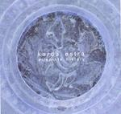

Home Artist links Label link

Karda Estra - Alternate History
| Artist: | Karda Estra |
| Title: | Alternate History |
| Label: | Cyclops CYCL146 |
| Length(s): | 50 minutes |
| Year(s) of release: | 2004 |
| Month of review: | [05/2005] |
Line up
Richard Wileman - classical, electric guitars, bass, keys, percussion
with:
Ileesha Bailey - vocals
Helen Dearnley - violin
Caron Hansford - oboe, cor anglias
Sarah Higgins - cello
Zoe King - flute, sax, clarinet
Rachel Larkins - viola, violin on 5
Tracks
| 1) | Andraiad | 8.23
|
| 2) | Lucy - Festina Lente | 6.34
|
| 3) | Bathed In Light | 2.27
|
| 4) | Dorothea's Nightmusic | 3.27
|
| 5) | Chaos Theme | 4.06
|
| 6) | The Toy Musician (Sketch) | 2.22
|
| 7) | ...from Deep Sleep | 4.02
|
| 8) | John Deth | 3.18
|
| 9) | Cassiopeia | 3.34
|
| 10) | Avatar | 5.05
|
| 11) | Twice Around The Sun | 6.08
|
Summary
Cyclops released this album to give people unfamiliar with Karda Estra a taste of this mostly one man band. It takes eight tracks from previous KE albums and adds three tracks which were only available on compilations before now. Being a sampler, this is released at a special price.
The music
The releases that lie at the source of this sampler were released over the period from 1998 to 2004. KE's style is typically some traditional orchestra instruments used as a base with modern instruments, synthesizers a very important part, laid across. The sound is mostly classical, though obviously very different from a symphonic orchestra. Across this Bailey's vocals and at times some choir are laid.
Despite the fact that this album is a sampler, it could be enjoyed as a pretty 'normal' KE album: the style of the different tracks is close enough to eachother to make the album sound consistent. It does contain a little more variation then the normal albums, but not markedly so. Besides, the added variation is pretty much an asset. Sure, Lucy -from the Voivode Dracula album- sounds a little darker than the other tracks, which can be very sugary sweet sounding. Avatar also sticks, having a pronounced dancy feel. This is one of the pieces not released on a regular album (Toy Musician and Chaos Theme being the other two), and described as an experiment.
Conclusion
What can I say? As a sampler this release does its thing: it gives a good impression of what Karda Estra is about. Mostly sweet music with a classical basis. It also makes clear how consistent KE's sound is, the most recent album Voivode Dracula differing just a little.
© Roberto Lambooy